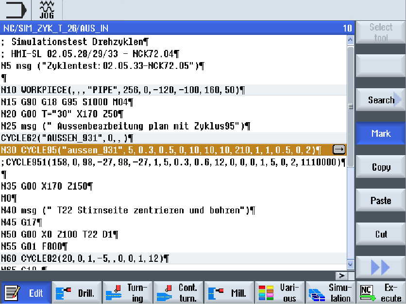

You can display a G code program in various ways.
-
Program view
-
Parameter screen, either with help screen or graphic view
| Note |
Help screens / animationsPlease note that not all the conceivable kinematics can be displayed in help screens and animations of the cyclic support. |
Program view
The program view in the editor provides an overview of the individual machining steps of a program.
Program view of a G code program
| Note |
In the program editor settings you define as to whether cycle calls are to be displayed as plain text or in NC syntax. You can also configure the recording of the machining times. |
Display of the machining times
Highlighting of selected G code commands or keywords
In the program editor settings, you can specify whether selected G code commands are to be highlighted in color. The following colors are used as standard:
Display | Meaning |
|---|---|
Blue font | D, S, F, T, M and H functions |
Red font | "G0" motion command |
Green font | "G1" motion command |
Blue-green font | "G2" or "G3" motion command |
Gray font | Comment |
| | Machine manufacturer You can define further highlight colors in the "sleditorwidget.ini" configuration file. Please refer to the machine manufacturer's specifications. |
Synchronization of programs on multi-channel machines
Special commands (e.g. GET and RELEASE) are used on multi-channel machines to synchronize the programs. These commands are marked with a clock symbol.
If the programs of several channels are displayed, the associated commands are displayed in one line.
Display | Meaning |
|---|---|
Synchronization command |
| | In the program view, you can move between the program blocks by pressing the <Cursor up> and <Cursor down> keys. |
Parameter screen with help display
| | Press the <Cursor right> key to open a selected program block or cycle in the program view. The associated parameter screen with help display is then displayed. |
| Note |
Switching between the help screen and the graphic viewThe key combination <CTRL> + <G> is also available for the switchover between the help screen and the graphic view. |
Parameter screen with help display
The animated help displays are always displayed with the correct orientation to the selected coordinate system. The parameters are dynamically displayed in the graphic. The selected parameter is displayed highlighted in the graphic.
The colored symbols
Red arrow = tool traverses in rapid traverse
Green arrow = tool traverses with the machining feedrate
Parameter screen with graphic view
| | Press the "Graphic view" softkey to toggle between the help screen and the graphic view in the screen. |
Parameter screen with a graphical view of a G code program block